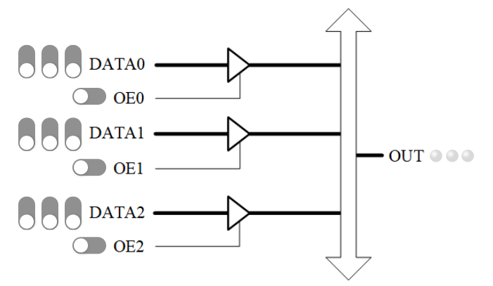

三态门和多路器实验
实验内容和要求
三态门
实验原理图如图 1。

图 1. 三态门的虚拟面板
实验材料中给出了图 1的HDL代码。读懂代码后用实验系统验证，通过验证理解三态门的特性和正确用法。特别地，考虑以下问题，并通过实验找出答案。
（1）如果有2个或2个以上的三态门同时打开，会有什么问题？
（2）三态门全都关闭时，总线上的状态应该是什么？实际显示又是什么？如何理解这个现象？
实验原理图如图 1。
实验材料中给出了图 1的HDL代码。读懂代码后用实验系统验证，通过验证理解三态门的特性和正确用法。特别地，考虑以下问题，并通过实验找出答案。
（1）如果有2个或2个以上的三态门同时打开，会有什么问题？
（2）三态门全都关闭时，总线上的状态应该是什么？实际显示又是什么？如何理解这个现象？